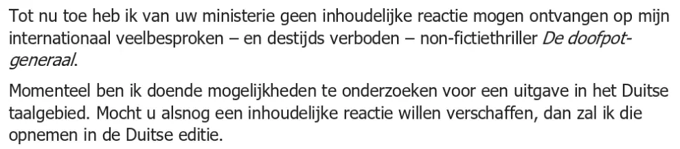

Exhibit · Letter
Giltay to the Ministry of Defence, 29 June 2020
The passage
“To date I have not received any substantive response from your ministry to my internationally much-discussed, and formerly banned, non-fiction thriller De doofpotgeneraal. I am at present exploring the possibilities of an edition for the German-language market. Should you still wish to provide a substantive response, I shall include it in the German edition.” Page 1, the first two paragraphs of the letter to Minister Bijleveld-Schouten, run together. Translated from the Dutch; the original wording is below. De doofpotgeneraal is the book’s original Dutch title; the English edition is The Cover-up General.
Original wording
“Tot nu toe heb ik van uw ministerie geen inhoudelijke reactie mogen ontvangen op mijn internationaal veelbesproken — en destijds verboden — non-fictiethriller De doofpotgeneraal. Momenteel ben ik doende mogelijkheden te onderzoeken voor een uitgave in het Duitse taalgebied. Mocht u alsnog een inhoudelijke reactie willen verschaffen, dan zal ik die opnemen in de Duitse editie.” The book title is italicised in the letter and, at the line break, printed as ‘De doofpot-generaal’; that hyphen marks the line break and is not part of the title.

Why this document matters
These are the four letters Giltay delivered in person to the Ministry of Defence on 29 June 2020, one to Minister Ank Bijleveld-Schouten and covering letters to three other recipients at the ministry, offering to include any substantive response in a German edition. The essay states that after the Supreme Court of the Netherlands ruled in 2019 on the Srebrenica case, in which the Mothers’ lawyers relied on the book, Giltay again heard nothing from Defence, and that in 2020 he formally invited the ministry once more to answer on the merits. A month later the Minister let it be known through spokesperson K.A. Meijer that Defence had no need to respond substantively to the book.
Provenance
- Document
- Four letters of one page each, with a photographed receipt as the fifth page
- From
- Edwin F. Giltay, author, The Hague
- To
- Ministry of Defence, Plein 4, The Hague: Minister A. Bijleveld-Schouten, with copies to State Secretary B. Visser, Secretary-General G. van Craaikamp and K. Meijer
- Date
- The Hague, 29 June 2020
- Subject
- Inhoudelijke reactie op De doofpotgeneraal (Substantive response to De doofpotgeneraal)
- Delivery
- Marked ‘in persoon afgegeven tegen bewijs van ontvangst’ (delivered in person against proof of receipt); the receipt on page 5 lists all four letters and is dated 29 June 2020
- Enclosure
- A German-language leaflet
- References
- The manuscript sent to Minister J. Hennis-Plasschaert on 10 March 2014, and a presentation copy left on 9 October 2017 for K. Dijkhoff; answered in the Ministry of Defence’s letter of 29 July 2020
- Language
- Dutch
- Pages
- 5 in this PDF: the letter to the Minister, three covering letters, and the receipt
- Held by
- Edwin Giltay, the sender
- Redactions
- On the four letters and on the receipt the signature is blacked out; the line for the recipient’s name was left blank
- See also
- Mothers of Srebrenica, statement of appeal, 7 July 2015Supreme Court of the Netherlands, judgment of 19 July 2019 (ECLI:NL:HR:2019:1223)
Cited in: the essay ‘The Ban Fell, the Book Stood’ in the chapter (7) ‘Never a Substantive Answer’.
Exhibit page: https://
Document: https://
Last modified 13 September 2026, accessed 3 October 2026.

This page is an exhibit to the book The Cover-up General by Edwin Giltay and its accompanying website.